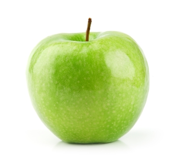

Az első weblapom
Az első weblapom
Az első weblapom
Az első weblapom
Az első weblapom

Egyik legismertebb gyümölcsünk,szerte a világon termesztik, fogyasztják a több ezer fajta valamelyikét.
Lista:
- Alma (nyers, héjával)
- Energia 52 kcal = 218 KJ
- Tápanyagtartalom 100 g-ban
- Szénhidrátok 13,81 g
- Cukrok 10,39 g
- Rost 2,4 g
- Zsír 0,17 g
- Fehérje 0,26 g
- Víz 85,5 g
- C-vitamin 4,6 g
- CSA FERI